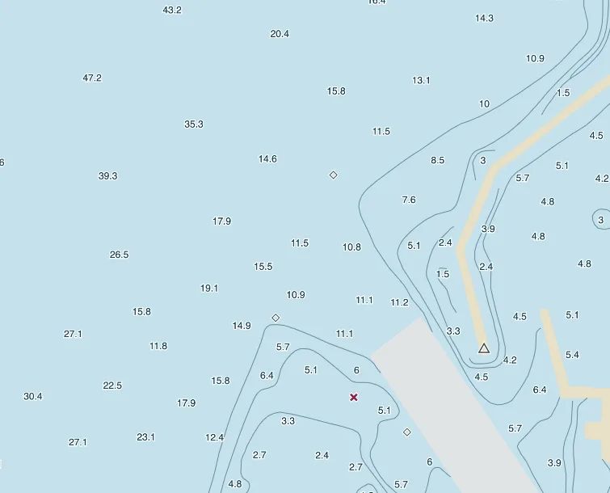
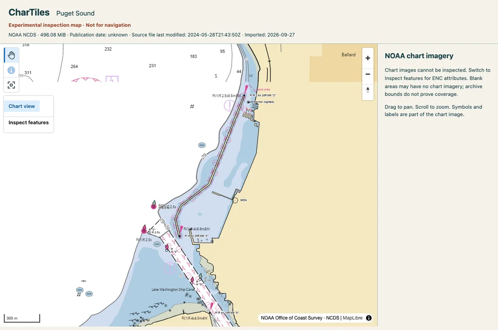
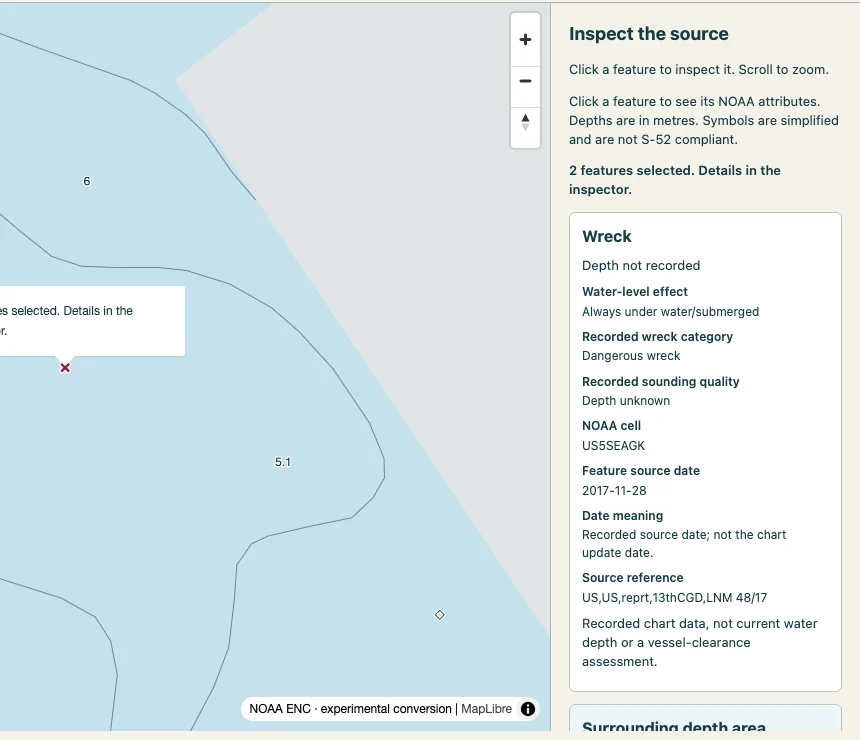
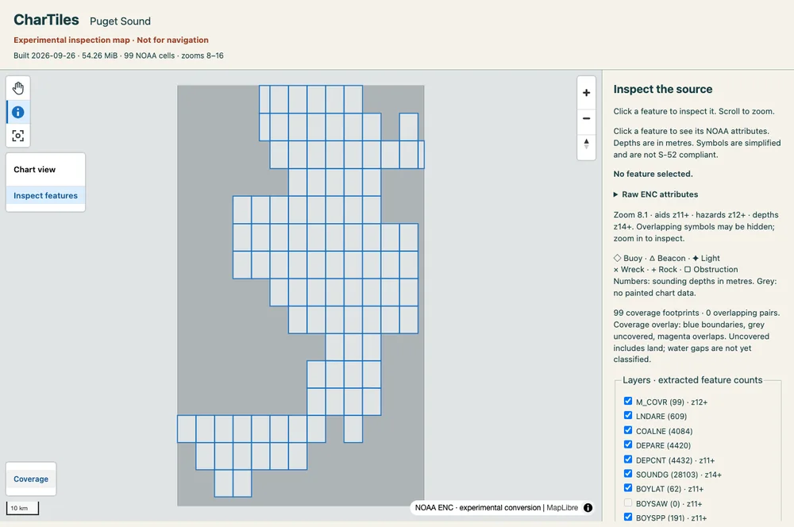

CUGOS lightning talk · Ivan Storck
Why CharTiles?
I sail on Puget Sound. I wanted a closer look at what’s on my chart.

I sail on Puget Sound. Those two diamonds on the chart are entrance buoys outside Shilshole. I wanted to sit down at my laptop, click one, and see what NOAA had recorded about it.
The bigger problem
What’s the OpenStreetMap equivalent for nautical charts?
On land, I can start with a ready-made basemap. For Puget Sound, I wanted a chart layer I could inspect.
Think of the base layer underneath a street map. With OpenStreetMap, I can start with ready-made tiles, small pieces the browser loads as I move. I wanted that kind of starting point for Puget Sound, with depths, buoys, and wrecks.
What NOAA serves
You can add chart imagery. What can you click?
Configure NOAA’s image service in MapLibre. The layer gives you a picture of the chart.

This screenshot shows NOAA chart imagery. MapLibre, the software drawing the web map, can display it if you tell it how to request each image. Click the wreck symbol, and the image layer has no wreck information to show you.
Shilshole Bay
What does the chart say about this wreck?

Here’s that wreck in CharTiles. The red cross marks its location. When I click it, the panel on the right shows NOAA’s description of the wreck and what’s known about the depth. The first line says “Depth not recorded.”
Two features near Shilshole
Unrecorded ≠ 0 m
Wreck
Depth not recorded
NOAA supplied no depth value.
Underwater rock
0 m
NOAA supplied a charted depth of zero metres.
On the left, the wreck popup says “Depth not recorded.” On the right, the nearby rock has a charted depth of zero metres. If I fill the wreck’s blank with zero, the two would look alike, and I’d be telling you something NOAA never reported.
Back to the Shilshole wreck
Which chart says “depth not recorded”?
The wreck’s detail panel lists NOAA chart US5SEAGK.
We’re back at the wreck panel. Below “Depth not recorded,” look for the line labeled “NOAA cell.” A cell is one chart’s geographic area. That code identifies the source chart I’d open to check the wreck myself.
Why convert the files?
From a NOAA chart to the tiles you see.
NOAA chart file
Features grouped into tiles
Tiles the browser loads
On the left, NOAA’s chart file stores the coastline and buoys in a format called S-57. In the middle, CharTiles groups those features into tiles. On the right, the outline shows which tiles the browser needs for the area you’re looking at.
Hosting nautical charts
Why PMTiles for a web map?
- MBTiles
- Browser Asks for a tile → Tile server Looks up the tile → MBTiles file
- PMTiles
- Browser Asks for a byte range → Hosted PMTiles file
Simpler hosting. No dedicated tile server and no full archive download.
Top row: the browser asks a tile server, which looks up the tile in MBTiles. Bottom row: the browser asks static hosting for a slice of the PMTiles file. Both can send only what’s needed. The win is one file to host and no tile server to run.
The first regional build
A piece of coastline disappeared during web tiling.
99 NOAA chart files → one 54 MiB Puget Sound archive.
The NOAA source chart had a short coastline segment near Shilshole. When we built the web tiles for Puget Sound, it disappeared. The map still looked fine. We caught it by comparing the features in the NOAA files with the features in the tiles.
Rounding on the web tile’s coordinate grid
Two endpoints snapped to one point.
Source endpoints
Coarse web tile grid
On the left are the two ends of that tiny coastline segment. On the right is the web tile’s own coordinate grid. When we wrote the line into the tile, both ends rounded to the same spot. The line disappeared inside the tile.
A finer web tile grid
Separate points. The line survives.
Source endpoints
Finer web tile grid
Same endpoints on the left. On the right, the grid has more positions to choose from. Each end now rounds to a different point, so the tile can keep the line. The grid got finer. The original survey stayed the same.
What the build checked
Same feature ID. Same depth.
Before tiling · Extracted from NOAA
Feature ID …0226BAD3CD1A9C11…
Sounding depth 226.4 m
After tiling · Read back at zoom 16
Feature ID …0226BAD3CD1A9C11…
Sounding depth 226.4 m
Still to check · Exact shapes, joins at chart edges, and how the map looks at other zooms.
This Shilshole sounding is a charted depth measurement. Compare the left and right: the same feature ID and 226.4 metres. We ran that check at the most detailed source tile zoom. It doesn’t tell us whether shapes changed, chart edges join, or the map looks right zoomed out.
Publishing an update
Keep the map working during an update.
1. Upload the new archive
2. Switch the pointer
On the left, the arrow still points to the old archive while the new file uploads. On the right, the new file is ready, so we switch the arrow. If we switched it too early, the browser could ask for tiles that aren’t there yet.
Coverage audit
Draw the footprints.
99 chart footprints. No two covered the same area in this build.

On the map, each blue outline traces the area one NOAA chart says it covers. That area is its footprint. In this build, none of the 99 footprints shared any area. Two charts can still touch along an edge.
A separate example · Source-chart edges
The source charts meet. The coastline doesn’t.
Coverage check · the edges meet
Feature check · the coastline breaks
This is a separate example, before we make any web tiles. On the left, two source charts share an edge. On the right, the dots show where each chart’s coastline reaches that edge. The coverage lines up. The coastline doesn’t.
Chart scale and browser zoom
Zooming in can’t add chart detail.
Coastal chart
Same chart, zoomed in
Harbor chart, same zoom
On the left is a coastal chart. In the middle, zooming in makes the same marks larger. On the right, I switch to a harbor chart at that same zoom. The extra buoy, depth numbers, and dock come from the more detailed source.
Overlapping chart cells
Two charts show the same buoy.
Harbor chart
Coastal chart
These panels show the same harbor entrance. The dashed box on the left is the harbor chart’s coverage. The bigger box on the right is the coastal chart’s. That diamond is the same buoy in both files. Which one should the web map use?
A test for the next build
One buoy on the web map.
Web map at harbor scale
Buoy details
Source chartHarbor chartAt harbor scale, this example uses the harbor chart. On the left, there’s one diamond where the buoy belongs. On the right, the detail panel tells me which chart supplied it. That gives us three things to test: one symbol, right place, right source.
What makes a useful test
One tricky chart boundary.
Two NOAA charts. One location. One feature the map should show.
A harbor entrance gives us a concrete test. Pick two charts, one location, and a buoy the map should show. I like starting with one example like that. It’s a way to tell whether a change made the map better.
Ivan Storck · CharTiles
I help organizations move their maps and charts to modern, low-cost open-source stacks.
Email me with one map or chart you’d like to modernize.
ivan@ivanstorck.com
I help organizations move their maps and charts to modern, low-cost open-source stacks. If you have a map or chart you’d like to modernize, email me the link and tell me what you’d like to change.